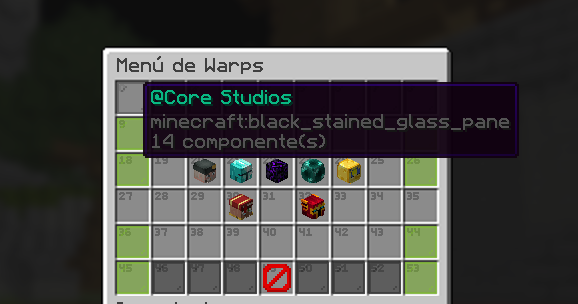

Hola, Soy FabxINC
Desarrollador Web y configurador de Servidores de MC
Apasionado por crear y configurar webs unicas y funcionales. Siempre buscando aprender nuevas tecnologias y mejorar habilidades en grande.
Contáctame
Experiencia Laboral
© 2025 - 2026
Desarrollador web
Diseñador y desarrollador web
Desarrollo de paginas web atractivas utilizando los lenguajes de HTML CSS y JavaScript
- HTML
- CSS3
- JavaScript
- PHP
- AXDDDD
© 2025 - 2026
Desarrollador de servidores de MC
Fabrizio
Desarrollo de paginas web atractivas utilizando los lenguajes de HTML CSS y JavaScript
- Traduccion de plugins
- Configurador de plugins (DeluxeMenus)
- Creador de Modalidades
- YAML
Proyectos Personales

Menu de WARPS
Este es un menu que eh estado haciendo duranto mis inicios y me a gustado como a ido quedando durante el proceso.
Completamente gratis
Menu de SHOP
Este es un menu que eh estado haciendo duranto mis inicios y me a gustado como a ido quedando durante el proceso.
Completamente gratis
Menu de WARPS
Este es un menu que eh estado haciendo duranto mis inicios y me a gustado como a ido quedando durante el proceso.
Completamente gratis